Régression linéaire par morceaux¶
Le paragraphe Régression linéaire
étudie le lien entre le coefficient  et la corrélation pour finalement illustrer
une façon de réaliser une régression linéaire par
morceaux. L’algorithme s’appuie sur un arbre
de régression pour découper en morceaux ce qui
n’est pas le plus satisfaisant car l’arbre
cherche à découper en segment en approximant
la variable à régresser Y par une constante sur chaque
morceaux et non une droite.
On peut se poser la question de comment faire
pour construire un algorithme qui découpe en approximant
Y par une droite et non une constante. Le plus dur
n’est pas de le faire mais de le faire efficacement.
Et pour comprendre là où je veux vous emmener, il faudra
un peu de mathématiques.
et la corrélation pour finalement illustrer
une façon de réaliser une régression linéaire par
morceaux. L’algorithme s’appuie sur un arbre
de régression pour découper en morceaux ce qui
n’est pas le plus satisfaisant car l’arbre
cherche à découper en segment en approximant
la variable à régresser Y par une constante sur chaque
morceaux et non une droite.
On peut se poser la question de comment faire
pour construire un algorithme qui découpe en approximant
Y par une droite et non une constante. Le plus dur
n’est pas de le faire mais de le faire efficacement.
Et pour comprendre là où je veux vous emmener, il faudra
un peu de mathématiques.
Une implémentation de ce type de méthode est proposée dans la pull request Model trees (M5P and co) qui répond à au problème posée dans Model trees (M5P) et originellement implémentée dans Building Model Trees. Cette dernière implémentation réestime les modèles comme l’implémentation décrite au paragraphe Implémentation naïve d’une régression linéaire par morceaux mais étendue à tout type de modèle.
Exploration¶
Problème et regréssion linéaire dans un espace à une dimension¶
Tout d’abord, une petite illustration du problème avec la classe PiecewiseRegression implémentée selon l’API de scikit-learn.

Cette régression par morceaux est obtenue grâce à un arbre
de décision. Celui-ci trie le nuage de points  par ordre croissant selon les X, soit 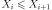.
L’arbre coupe en deux lorsque la différence des erreurs quadratiques est
maximale, erreur quadratique obtenue en approximant Y par sa moyenne
sur l’intervalle considéré. On note l’erreur quadratique :
par ordre croissant selon les X, soit 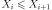.
L’arbre coupe en deux lorsque la différence des erreurs quadratiques est
maximale, erreur quadratique obtenue en approximant Y par sa moyenne
sur l’intervalle considéré. On note l’erreur quadratique :

La dernière ligne applique la formule 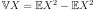 qui est facile à redémontrer. L’algorithme de l’arbre de décision coupe un intervalle en deux et détermine l’indice k qui minimise la différence :
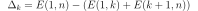
L’arbre de décision optimise la construction d’une fonction en escalier qui représente au mieux le nuage de points, les traits verts sur le graphe suivant, alors qu’il faudrait choisir une erreur quadratique qui corresponde aux traits oranges.

Il suffirait donc de remplacer l’erreur E par celle obtenue
par une régression linéaire. Mais si c’était aussi simple,
l’implémentation de sklearn.tree.DecisionTreeRegressor
la proposerait. Alors pourquoi ?
La raison principale est que cela coûte trop cher en
temps de calcul. Pour trouver l’indice k, il faut calculer
toutes les erreurs 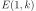 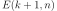, ce qui
coûte très cher lorsque cette erreur est celle d’une régression
linéaire parce qu’il est difficile de simplifier la différence :
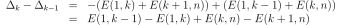
Arbre de régression constante
On s’intéresse au terme dans le cas le nuage de points est représenté par une constante sur chaque segment. C’est l’hypothèse faite par l’algorithme classique de construction d’un arbre de régression (segments verts sur le premier dessin) :
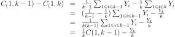
On en déduit que :
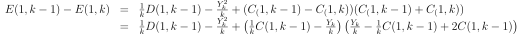
On voit que cette formule ne fait intervenir que 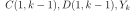,
elle est donc très rapide à calculer et c’est pour cela qu’apprendre un arbre
de décision peut s’apprendre en un temps raisonnable. Cela repose sur la possibilité
de calculer le critère optimisé par récurrence. On voit également que ces formules
ne font pas intervenir X, elles sont donc généralisables au cas
multidimensionnel. Il suffira de trier les couples
selon chaque dimension et déterminer le meilleur seuil de coupure
d’abord sur chacune des dimensions puis de prendre le meilleur
de ces seuils sur toutes les dimensions. Le problème est résolu.
Le notebook Custom Criterion for DecisionTreeRegressor implémente une version pas efficace du critère MSE et compare la vitesse d’exécution avec l’implémentation de scikit-learn. Il implémente ensuite le calcul rapide de scikit-learn pour montrer qu’on obtient un temps comparable. Le résultat est sans équivoque. La version rapide n’implémente pas 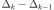 mais plutôt les sommes 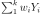, 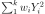 dans un sens et dans l’autre. En gros, le code stocke les séries des numérateurs et des dénominateurs pour les diviser au dernier moment.
Arbre de régression linéaire
Le cas d’une régression est plus complexe. Prenons d’abord le cas où il n’y a qu’un seule dimension, il faut d’abord optimiser le problème :
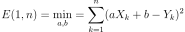
On dérive pour aboutir au système d’équations suivant :
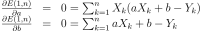
Ce qui aboutit à :
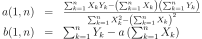
Pour construire un algorithme rapide pour apprendre un arbre de décision avec cette fonction de coût, il faut pouvoir calculer 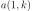 en fonction de 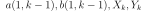 ou d’autres quantités intermédiaires qui ne font pas intervenir les valeurs 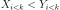. D’après ce qui précède, cela paraît tout-à-fait possible. Mais dans le cas multidimensionnel, il faut déterminer le vecteur A qui minimise 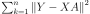 ce qui donne 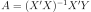. Si on note la matrice M tronquée pour ne garder que ses k premières lignes, il faudrait pouvoir calculer rapidement :
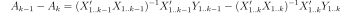
La documentation de sklearn.tree.DecisionTreeRegressor
ne mentionne que deux critères pour apprendre un arbre de décision
de régression, MSE pour
sklearn.metrics.mean_squared_error() et MAE pour
sklearn.metrics.mean_absolute_error(). Les autres critères n’ont
probablement pas été envisagés. L’article [Acharya2016] étudie la possibilité
de ne pas calculer la matrice 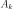 pour tous les k.
Le paragraphe Streaming Linear Regression utilise
le fait que la matrice A est la solution d’un problème d’optimisation
quadratique et propose un algorithme de mise à jour de la matrice A
(cas unidimensionnel). Cet exposé va un peu plus loin
pour proposer une version qui ne calcule pas de matrices inverses.
Implémentation naïve d’une régression linéaire par morceaux¶
On part du cas général qui écrit la solution d’une régression linéaire comme étant la matrice et on adapte l’implémentation de scikit-learn pour optimiser l’erreur quadratique obtenue. Ce n’est pas simple mais pas impossible. Il faut entrer dans du code cython et, pour éviter de réécrire une fonction qui multiplie et inverse une matrice, on peut utiliser la librairie LAPACK. Je ne vais pas plus loin ici car cela serait un peu hors sujet mais ce n’était pas une partie de plaisir. Cela donne : piecewise_tree_regression_criterion_linear.pyx C’est illustré toujours par le notebook DecisionTreeRegressor optimized for Linear Regression.
Aparté sur la continuité de la régression linéaire par morceaux¶
Approcher la fonction 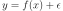 quand x et y sont réels est un problème facile, trop facile… A voir le dessin, précédent, il est naturel de vouloir recoller les morceaux lorsqu’on passe d’un segment à l’autre. Il s’agit d’une optimisation sous contrainte. Il est possible également d’ajouter une contrainte de régularisation qui tient compte de cela. On exprime cela comme suit avec une régression linéaire à deux morceaux.
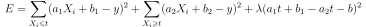
Le cas multidimensionnel est loin d’être aussi simple. Avec une dimension, chaque zone a deux voisines. En deux dimensions, chaque zone peut en avoir plus de deux. La figure suivante montre une division de l’espace dans laquelle la zone centrale a cinq voisins.

Peut-on facilement approcher une fonction 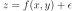 par un plan en trois dimensions ? A moins que tous les sommets soient déjà dans le même plan, c’est impossible. La zone en question n’est peut-être même pas convexe. Une régression linéaire par morceaux et continue en plusieurs dimensions n’est pas un problème facile. Cela n’empêche pas pour autant d’influencer la détermination de chaque morceaux avec une contrainte du type de celle évoquée plus haut mais pour écrire la contrainte lorsque les zones sont construites à partir des feuilles d’un arbre de décision, il faut déterminer quelles sont les feuilles voisines. Et ça c’est un problème intéressant !
Régression linéaire et corrélation¶
On reprend le calcul multidimensionnel mais on s’intéresse au
cas où la matrice 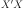 est diagonale qui correspond au cas
où les variables 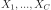 ne sont pas corrélées.
Si 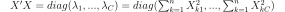,
la matrice  s’exprime plus simplement 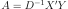.
On en déduit que :
s’exprime plus simplement 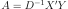.
On en déduit que :
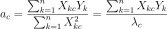
Cette expression donne un indice sur la résolution d’une régression linéaire pour laquelle les variables sont corrélées. Il suffit d’appliquer d’abord une ACP (Analyse en Composantes Principales) et de calculer les coefficients 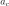 associés à des valeurs propres non nulles. On écrit alors 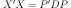 où la matrice P vérifie 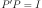.
Idée de l’algorithme¶
On s’intéresser d’abord à la recherche d’un meilleur point de coupure.
Pour ce faire, les éléments  sont triés le plus souvent
selon l’ordre défini par une dimension. On note E l’erreur de prédiction
sur cette échantillon 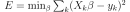.
On définit ensuite 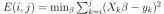.
D’après cette notation, 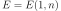. La construction de l’arbre
de décision passe par la détermination de 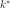 qui vérifie :
sont triés le plus souvent
selon l’ordre défini par une dimension. On note E l’erreur de prédiction
sur cette échantillon 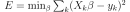.
On définit ensuite 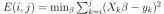.
D’après cette notation, 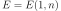. La construction de l’arbre
de décision passe par la détermination de 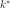 qui vérifie :
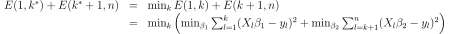
Autrement dit, on cherche le point de coupure qui maximise la différence entre la prédiction obtenue avec deux régressions linéaires plutôt qu’une. On sait qu’il existe une matrice P qui vérifie :
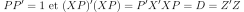
Où 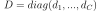 est une matrice diagonale. On a posé , donc 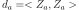. On peut réécrire le problème de régression comme ceci :

Comme 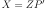 :
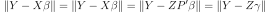
Avec 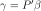. C’est la même régression après un changement de repère et on la résoud de la même manière :
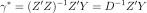
La notation 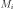 désigne la ligne i et 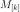 désigne la colonne. On en déduit que le coefficient de la régression 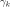 est égal à :
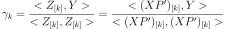
On en déduit que :
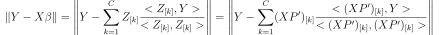
Algorithme A1 : Arbre de décision optimisé pour les régressions linéaires
On dipose qu’un nuage de points avec
 et
et  . Les points sont
triés selon une dimension. On note X la matrice composée
des lignes et le vecteur colonne
. Les points sont
triés selon une dimension. On note X la matrice composée
des lignes et le vecteur colonne
 .
Il existe une matrice
.
Il existe une matrice  telle que
et avec D une matrice diagonale.
On note la matrice constituée des lignes
a à b. On calcule :
telle que
et avec D une matrice diagonale.
On note la matrice constituée des lignes
a à b. On calcule :
Un noeud de l’arbre est construit en choisissant le point de coupure qui minimise :
Par la suite on verra que le fait que la matrice soit diagonale est l’élément
principal mais la matrice P ne doit pas nécessairement
vérifier  .
.
Un peu plus en détail dans l’algorithme¶
J’ai pensé à plein de choses pour aller plus loin car l’idée
est de quantifier à peu près combien on pert en précision en utilisant
des vecteurs propres estimés avec l’ensemble des données sur une partie
seulement. Je me suis demandé si les vecteurs propres d’une matrice
pouvait être construit à partir d’une fonction continue de la matrice
symétrique de départ. A peu près vrai mais je ne voyais pas une façon
de majorer cette continuité. Ensuite, je me suis dit que les vecteurs
propres de ne devaient pas être loin de ceux de
où  est un sous-échantillon aléatoire de l’ensemble
de départ. Donc comme il faut juste avoir une base de vecteurs
orthogonaux, je suis passé à l”orthonormalisation de Gram-Schmidt.
Il n’a pas non plus ce défaut de permuter les dimensions ce qui rend
l’observation de la continuité a little bit more complicated comme
le max dans l”algorithme de Jacobi.
L’idée est se servir cette orthonormalisation pour construire
la matrice P de l’algortihme.
est un sous-échantillon aléatoire de l’ensemble
de départ. Donc comme il faut juste avoir une base de vecteurs
orthogonaux, je suis passé à l”orthonormalisation de Gram-Schmidt.
Il n’a pas non plus ce défaut de permuter les dimensions ce qui rend
l’observation de la continuité a little bit more complicated comme
le max dans l”algorithme de Jacobi.
L’idée est se servir cette orthonormalisation pour construire
la matrice P de l’algortihme.
La matrice est constituée de C vecteurs ortonormaux . Avec les notations que j’ai utilisées jusqu’à présent : . On note la matrice identité .
![\begin{array}{rcl}
T_{[1]} &=& \frac{ X_{[1]} }{ \norme{X_{[1]}} } \\
P_{[1]} &=& \frac{ I_{[1]} }{ \norme{X_{[1]}} } \\
T_{[2]} &=& \frac{ X_{[2]} - <X_{[2]}, T_{[1]}> T_{[1]} }
{ \norme{X_{[2]} - <X_{[2]}, T_{[1]}> T_{[1]}} } \\
P_{[2]} &=& \frac{ I_{[2]} - <X_{[2]}, T_{[1]}> T_{[1]} }
{ \norme{X_{[2]} - <X_{[2]}, T_{[1]}> T_{[1]}} } \\
... && \\
T_{[k]} &=& \frac{ X_{[k]} - \sum_{i=1}^{k-1} <X_{[k]}, T_{[i]}> T_{[i]} }
{ \norme{ X_{[2]} - \sum_{i=1}^{k-1} <X_{[k]}, T_{[i]}> T_{[i]} } } \\
P_{[k]} &=& \frac{ I_{[k]} - \sum_{i=1}^{k-1} <X_{[k]}, T_{[i]}> T_{[i]} }
{ \norme{ X_{[2]} - \sum_{i=1}^{k-1} <X_{[k]}, T_{[i]}> T_{[i]} } } \\
\end{array}](../_images/math/cbb272848eb51ed3365e135fa48895fce06f241d.svg)
La matrice T vérifie puisque les vecteurs sont
construits de façon à être orthonormés. Et on vérifie que
 et donc .
C’est implémenté par la fonction
et donc .
C’est implémenté par la fonction
gram_schmidt.
<<<
import numpy
from mlstatpy.ml.matrices import gram_schmidt
X = numpy.array([[1, 0.5, 0], [0, 0.4, 2]], dtype=float).T
U, P = gram_schmidt(X.T, change=True)
U, P = U.T, P.T
m = X @ P
D = m.T @ m
print(D)
>>>
[[1.000e+00 1.155e-17]
[1.155e-17 1.000e+00]]
Cela débouche sur une autre formulation du calcul
d’une régression linéaire à partir d’une orthornormalisation
de Gram-Schmidt qui est implémentée dans la fonction
linear_regression.
<<<
import numpy
from mlstatpy.ml.matrices import linear_regression
X = numpy.array([[1, 0.5, 0], [0, 0.4, 2]], dtype=float).T
y = numpy.array([1, 1.3, 3.9])
beta = linear_regression(X, y, algo="gram")
print(beta)
>>>
[1.008 1.952]
L’avantage est que cette formulation s’exprime uniquement à partir de produits scalaires. Voir le notebook svuiant Régression sans inversion.
Synthèse mathématique¶
Algorithme A2 : Orthonormalisation de Gram-Schmidt
Soit une matrice avec
. Il existe deux matrices telles que
ou .
et .
La matrice T est triangulaire supérieure
et vérifie ( est la matrice identité). L’algorithme se décrit
comme suit :
est la matrice identité). L’algorithme se décrit
comme suit :
Théorème T1 : Régression linéaire après Gram-Schmidt
Soit une matrice avec
. Et un vecteur .
D’après l”algorithme de Gram-Schmidt,
il existe deux matrices telles que
ou .
et .
La matrice T est triangulaire supérieure
et vérifie (
est la matrice identité). Alors
.
 est la solution du problème d’optimisation
.
est la solution du problème d’optimisation
.
La démonstration est géométrique et reprend l’idée du paragraphe précédent. La solution de la régression peut être vu comme la projection du vecteur y sur l’espace vectoriel engendré par les vecteurs . Par construction, cet espace est le même que celui engendré par . Dans cette base, la projection de y a pour coordoonées . On en déduit que la projection de y s’exprimer comme :
Il ne reste plus qu’à expremier cette projection dans la base initial X. On sait que . On en déduit que ;
D’où . L’implémentation suit :
<<<
import numpy
X = numpy.array([[1.0, 2.0, 3.0, 4.0], [5.0, 6.0, 6.0, 6.0], [5.0, 6.0, 7.0, 8.0]]).T
Xt = X.T
Tt = numpy.empty(Xt.shape)
Pt = numpy.identity(X.shape[1])
for i in range(0, Xt.shape[0]):
Tt[i, :] = Xt[i, :]
for j in range(0, i):
d = numpy.dot(Tt[j, :], Xt[i, :])
Tt[i, :] -= Tt[j, :] * d
Pt[i, :] -= Pt[j, :] * d
d = numpy.dot(Tt[i, :], Tt[i, :])
if d > 0:
d **= 0.5
Tt[i, :] /= d
Pt[i, :] /= d
print("X")
print(X)
print("T")
print(Tt.T)
print("X P")
print(X @ Pt.T)
print("T T'")
print(Tt @ Tt.T)
y = numpy.array([0.1, 0.2, 0.19, 0.29])
beta1 = numpy.linalg.inv(Xt @ X) @ Xt @ y
beta2 = Tt @ y @ Pt
print("beta1")
print(beta1)
print("beta2")
print(beta2)
>>>
X
[[1. 5. 5.]
[2. 6. 6.]
[3. 6. 7.]
[4. 6. 8.]]
T
[[ 0.183 0.736 0.651]
[ 0.365 0.502 -0.67 ]
[ 0.548 0.024 -0.181]
[ 0.73 -0.453 0.308]]
X P
[[ 0.183 0.736 0.651]
[ 0.365 0.502 -0.67 ]
[ 0.548 0.024 -0.181]
[ 0.73 -0.453 0.308]]
T T'
[[ 1.000e+00 4.014e-16 9.293e-16]
[ 4.014e-16 1.000e+00 -1.115e-14]
[ 9.293e-16 -1.115e-14 1.000e+00]]
beta1
[ 0.077 0.037 -0.032]
beta2
[ 0.077 0.037 -0.032]
La librairie implémente ces deux algorithmes de manière un peu
plus efficace dans les fonctions
gram_schmidt et
linear_regression.
Streaming¶
Streaming Gram-Schmidt¶
Je ne sais pas vraiment comment le dire en français, peut-être régression linéaire mouvante. Même Google ou Bing garde le mot streaming dans leur traduction… C’est néanmoins l’idée qu’il faut réussir à mettre en place d’une façon ou d’une autre car pour choisir le bon point de coupure pour un arbre de décision. On note la matrice composée des lignes et le vecteur colonne . L’apprentissage de l’arbre de décision faut calculer des régressions pour les problèmes . L’idée que je propose n’est pas parfaite mais elle fonctionne pour l’idée de l’algorithme avec Gram-Schmidt.
Tout d’abord, il faut imaginer un algorithme de Gram-Schmidt version streaming. Pour la matrice , celui-ci produit deux matrices et telles que : . On note d la dimension des observations. Comment faire pour ajouter une observation ? L’idée d’un algorithme au format streaming est que le coût de la mise à jour pour l’itération k+1 ne dépend pas de k.
On suppose donc que sont les deux matrices
retournées par l’algorithme de Gram-Schmidt.
On construit la matrice :
on ajoute une ligne à la matrice . On applique
une itération de algorithme de Gram-Schmidt
pour obtenir . On en déduit que
. L’expression
de la régression ne change pas mais il reste à l’expression
de telle sorte que les expressions ne dépendent pas de k.
Comme , la seule matrice qui nous intéresse
véritablement est  .
.
Maintenant, on considère la matrice qui vérifie
et on ajoute une ligne
pour former
.
La fonction streaming_gram_schmidt_update
implémente la mise à jour. Le coût de la fonction est en
.
<<<
import numpy
from mlstatpy.ml.matrices import streaming_gram_schmidt_update, gram_schmidt
X = numpy.array(
[[1, 0.5, 10.0, 5.0, -2.0], [0, 0.4, 20, 4.0, 2.0], [0, 0.7, 20, 4.0, 2.0]],
dtype=float,
).T
Xt = X.T
Tk, Pk = gram_schmidt(X[:3].T, change=True)
print("k={}".format(3))
print(Pk)
Tk = X[:3] @ Pk.T
print(Tk.T @ Tk)
k = 3
while k < X.shape[0]:
streaming_gram_schmidt_update(Xt[:, k], Pk)
k += 1
print("k={}".format(k))
print(Pk)
Tk = X[:k] @ Pk.T
print(Tk.T @ Tk)
>>>
k=3
[[ 0.099 0. 0. ]
[-0.953 0.482 0. ]
[-0.287 -3.338 3.481]]
[[ 1.000e+00 -1.310e-15 -2.238e-15]
[-1.310e-15 1.000e+00 1.390e-14]
[-2.238e-15 1.390e-14 1.000e+00]]
k=4
[[ 0.089 0. 0. ]
[-0.308 0.177 0. ]
[-0.03 -3.334 3.348]]
[[ 1.000e+00 -3.570e-16 -1.808e-15]
[-3.570e-16 1.000e+00 2.423e-15]
[-1.808e-15 2.423e-15 1.000e+00]]
k=5
[[ 0.088 0. 0. ]
[-0.212 0.128 0. ]
[-0.016 -3.335 3.342]]
[[ 1.000e+00 1.756e-17 -4.660e-15]
[ 1.756e-17 1.000e+00 9.833e-16]
[-4.660e-15 9.833e-16 1.000e+00]]
Streaming Linear Regression¶
Je reprends l’idée introduite dans l’article
Efficient online linear regression.
On cherche à minimiser et le vecteur
solution annuler le gradient : .
On note le vecteur  qui vérifie
.
Qu’en est-il de
qui vérifie
.
Qu’en est-il de  ?
On note .
?
On note .
![\begin{array}{rcl}
\nabla(\beta_{k+1}) &=& -2X_{1..k+1}'(y_{1..k+1} - X_{1..k+1}(\beta_k + d\beta)) \\
&=& -2 [ X_{1..k}' X_{k+1}' ] ( [ y_{1..k} y_{k+1} ] - [ X_{1..k} X_{k+1} ]'(\beta_k + d\beta)) \\
&=& -2 X_{1..k}' ( y_{1..k} - X_{1..k} (\beta_k + d\beta))
-2 X_{k+1}' ( y_{k+1} - X_{k+1} (\beta_k + d\beta)) \\
&=& 2 X_{1..k}' X_{1..k} d\beta -2 X_{k+1}' ( y_{k+1} - X_{k+1} (\beta_k + d\beta)) \\
&=& 2 (X_{1..k}' X_{1..k} + X_{k+1}' X_{k+1}) d\beta - 2 X_{k+1}' (y_{k+1} - X_{k+1} \beta_k)
\end{array}](../_images/math/e09f9839874543ddd91206a2a8ebcf6833eebce8.svg)
On en déduit la valeur qui annule le gradient.
On peut décliner cette formule en version streaming.
C’est ce qu’implémente la fonction
streaming_linear_regression_update.
Le coût de l’algorithme est en  .
L’inconvénient de cet algorithme est qu’il requiert des
matrices inversibles. C’est souvent le cas et la probabilité
que cela ne le soit pas décroît avec k. C’est un petit
inconvénient compte tenu de la simplicité de l’implémentation.
On vérifie que tout fonction bien sur un exemple.
.
L’inconvénient de cet algorithme est qu’il requiert des
matrices inversibles. C’est souvent le cas et la probabilité
que cela ne le soit pas décroît avec k. C’est un petit
inconvénient compte tenu de la simplicité de l’implémentation.
On vérifie que tout fonction bien sur un exemple.
<<<
import numpy
def linear_regression(X, y):
inv = numpy.linalg.inv(X.T @ X)
return inv @ (X.T @ y)
def streaming_linear_regression_update(Xk, yk, XkXk, bk):
Xk = Xk.reshape((1, XkXk.shape[0]))
xxk = Xk.T @ Xk
XkXk += xxk
err = Xk.T * (yk - Xk @ bk)
bk[:] += (numpy.linalg.inv(XkXk) @ err).flatten()
def streaming_linear_regression(mat, y, start=None):
if start is None:
start = mat.shape[1]
Xk = mat[:start]
XkXk = Xk.T @ Xk
bk = numpy.linalg.inv(XkXk) @ (Xk.T @ y[:start])
yield bk
k = start
while k < mat.shape[0]:
streaming_linear_regression_update(mat[k], y[k : k + 1], XkXk, bk)
yield bk
k += 1
X = numpy.array(
[[1, 0.5, 10.0, 5.0, -2.0], [0, 0.4, 20, 4.0, 2.0], [0, 0.7, 20, 4.0, 3.0]],
dtype=float,
).T
y = numpy.array([1.0, 0.3, 10, 5.1, -3.0])
for i, bk in enumerate(streaming_linear_regression(X, y)):
bk0 = linear_regression(X[: i + 3], y[: i + 3])
print("iteration", i, bk, bk0)
>>>
iteration 0 [ 1. 0.667 -0.667] [ 1. 0.667 -0.667]
iteration 1 [ 1.03 0.682 -0.697] [ 1.03 0.682 -0.697]
iteration 2 [ 1.036 0.857 -0.875] [ 1.036 0.857 -0.875]
Streaming Linear Regression version Gram-Schmidt¶
L’algorithme reprend le théorème
Régression linéaire après Gram-Schmidt
et l’algorithme Streaming Gram-Schmidt. Tout tient dans cette formule :
qu’on écrit différemment
en considérent l’associativité de la multiplication des matrices :
. La matrice centrale
a pour dimension d. L’exemple suivant implémente cette idée.
Il s’appuie sur les fonctions streaming_gram_schmidt_update et
gram_schmidt.
<<<
import numpy
from mlstatpy.ml.matrices import gram_schmidt, streaming_gram_schmidt_update
def linear_regression(X, y):
inv = numpy.linalg.inv(X.T @ X)
return inv @ (X.T @ y)
def streaming_linear_regression_gram_schmidt_update(Xk, yk, Xkyk, Pk, bk):
Xk = Xk.T
streaming_gram_schmidt_update(Xk, Pk)
Xkyk += (Xk * yk).reshape(Xkyk.shape)
bk[:] = Pk @ Xkyk @ Pk
def streaming_linear_regression_gram_schmidt(mat, y, start=None):
if start is None:
start = mat.shape[1]
Xk = mat[:start]
xyk = Xk.T @ y[:start]
_, Pk = gram_schmidt(Xk.T, change=True)
bk = Pk @ xyk @ Pk
yield bk
k = start
while k < mat.shape[0]:
streaming_linear_regression_gram_schmidt_update(mat[k], y[k], xyk, Pk, bk)
yield bk
k += 1
X = numpy.array(
[[1, 0.5, 10.0, 5.0, -2.0], [0, 0.4, 20, 4.0, 2.0], [0, 0.7, 20, 4.0, 3.0]],
dtype=float,
).T
y = numpy.array([1.0, 0.3, 10, 5.1, -3.0])
for i, bk in enumerate(streaming_linear_regression_gram_schmidt(X, y)):
bk0 = linear_regression(X[: i + 3], y[: i + 3])
print("iteration", i, bk, bk0)
>>>
iteration 0 [ 1. 0.667 -0.667] [ 1. 0.667 -0.667]
iteration 1 [ 1.03 0.682 -0.697] [ 1.03 0.682 -0.697]
iteration 2 [ 1.036 0.857 -0.875] [ 1.036 0.857 -0.875]
Ces deux fonctions sont implémentées dans le module par
streaming_linear_regression_gram_schmidt_update
et streaming_linear_regression_gram_schmidt.
Le coût de l’algorithme est en mais n’inclut pas
d’inversion de matrices.
Digressions¶
L’article An Efficient Two Step Algorithm for High DimensionalChange Point Regression Models Without Grid Search propose un cadre théorique pour déterminer une frontière dans un nuage de données qui délimite un changement de modèle linéaire. Le suivant étudie des changements de paramètres Change Surfaces for Expressive MultidimensionalChangepoints and Counterfactual Prediction d’une façon plus générique.
Notebooks¶
Voir aussi [Cai2020], [Nie2016], [Preda2010].
Implémentations¶
Bilbiographie¶
Fast Algorithms for Segmented Regression, Jayadev Acharya, Ilias Diakonikolas, Jerry Li, Ludwig Schmidt, ICML 2016
Online Sufficient Dimension Reduction Through Sliced Inverse Regression, Zhanrui Cai, Runze Li, Liping Zhu
Online PCA with Optimal Regret, Jiazhong Nie, Wojciech Kotlowski, Manfred K. Warmuth
The NIPALS Algorithm for Missing Functional Data, Cristian Preda, Gilbert Saporta, Mohamed Hadj Mbarek, Revue roumaine de mathématiques pures et appliquées 2010, 55 (4), pp.315-326.
Voir aussi The NIPALS algorithm.